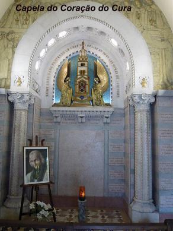
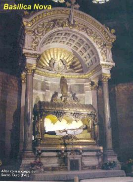
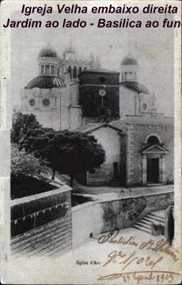
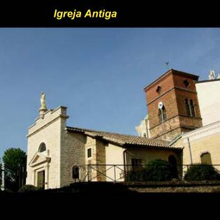

As perseguições infernais começaram no tempo
em que ele meditava e idealizava a “Casa da
Providência”, e logo a seguir comprou
uma casa. Nesta época contraiu uma enfermidade e sentiu-se envolvido por
terríveis pensamentos de desesperação, que inclusive, lhe sugestionava estar
próxima a sua morte. Naquela abominável confusão mental, parecia-lhe ouvir
repetidamente, dentro de si mesmo, uma voz que dizia: “Agora cairás no inferno”. Percebendo que
aquilo se tratava de uma investida diabólica, reagiu prontamente, rezando o
Terço de NOSSA SENHORA. Imediatamente aquelas reações cessaram.
seguir comprou
uma casa. Nesta época contraiu uma enfermidade e sentiu-se envolvido por
terríveis pensamentos de desesperação, que inclusive, lhe sugestionava estar
próxima a sua morte. Naquela abominável confusão mental, parecia-lhe ouvir
repetidamente, dentro de si mesmo, uma voz que dizia: “Agora cairás no inferno”. Percebendo que
aquilo se tratava de uma investida diabólica, reagiu prontamente, rezando o
Terço de NOSSA SENHORA. Imediatamente aquelas reações cessaram.
O demônio atacou-o de outro modo, procurando roubar-lhe a paz exterior. Cada noite o nosso Santo ouvia rasgarem as cortinas da sua cama. Inicialmente pensou que fossem roedores, mas pela manhã observava que as cortinas estavam intactas, sem qualquer dano.
Em outra época, no silêncio da noite ouviram-se pancadas e gritos no pátio da Casa Paroquial. Acaso seriam ladrões que queriam assaltar o Padre? O Cura desceu às pressas e não viu nada. Mas o barulho foi tão intenso que ele ficou assustado, nas noites seguintes receou ficar só. Levou André Verchere, carvoeiro da vila, jovem de 28 anos, robusto e corajoso, para dormir na Casa Paroquial. Por via das dúvidas André levou o seu fuzil e uma caixa de balas. Ele descreve o acontecido: “Altas horas da noite ouvi sacudir violentamente o ferrolho e a tranca da porta de entrada. Simultaneamente contra a mesma porta ressoavam fortes pancadas, enquanto a casa se enchia de um ruído atordoador como de vários carros. De um salto da cama peguei o fuzil e abri a janela com violência. Olhei para o pátio e a entrada e não vi nada. Então a casa estremeceu durante 25 minutos aproximadamente. Fiquei apavorado. Confesso que minhas pernas tremeram sem parar e disto me ressenti durante oito dias. Quando o estrépito começou, o senhor Cura acendeu uma lâmpada e veio ter comigo, a casa estremecia como se a terra embaixo se movimentasse. Ele me perguntou:”“Tens medo”? “Respondi que não, mas que minhas pernas estavam tremendo muito. Perguntei: O que o senhor pensa que seja isto? Ele me respondeu:”“Provavelmente é obra do diabo”.
“Quando cessou o barulho voltamos a dormir. Na noite seguinte o senhor Cura pediu-me que ficasse novamente com ele, mas não aceitei, respondi-lhe que já tinha levado um susto suficientemente grande”.
De onde procediam aqueles ruídos misteriosos? O Padre Vianney intranquilo, porém prudente, ainda não ousava emitir uma concreta opinião. Uma noite em que a neve cobria o solo ressoaram gritos no pátio. Disse o Padre: “Era como um exército de Austríacos ou de Cossacos que confusamente falavam uma língua que eu não entendia. Abri a porta, não vi ninguém”! Então não havia mais lugar para dúvidas. Não se tratava de vozes humanas, mas de qualquer coisa horrível e infernal. Ficou convencido de que nem paus e nem fuzis poderiam contra o inimigo, que somente ele e DEUS o poderia enfrentar.
 Chegou o
tempo do trabalho intenso, quando Padre Vianney passava a maior parte do dia no
confessionário. À noite, cansado pelo exaustivo labor, não se deitava antes de
ler algumas páginas da Vida dos Santos e depois, fazia uma severa mortificação,
se flagelando de espaço em espaço com sangrenta disciplina. Feito isto,
procurava dormir. Estava quase no sono, quando de repente sentiu com horror que
o demônio estava ao seu lado. Ele permanecia invisível, porém sua presença se
deixava sentir: derrubava cadeiras, sacudia os pesados móveis e gritava com voz
aterradora: “Vianney, Vianney... Comilão de
batatas... Ah! Ainda não estás morto... Não me escaparás”.
Às vezes imitando animais, grunhia como um urso; uivava como um lobo; e avançando
sobre as cortinas as sacudia com furor.
Chegou o
tempo do trabalho intenso, quando Padre Vianney passava a maior parte do dia no
confessionário. À noite, cansado pelo exaustivo labor, não se deitava antes de
ler algumas páginas da Vida dos Santos e depois, fazia uma severa mortificação,
se flagelando de espaço em espaço com sangrenta disciplina. Feito isto,
procurava dormir. Estava quase no sono, quando de repente sentiu com horror que
o demônio estava ao seu lado. Ele permanecia invisível, porém sua presença se
deixava sentir: derrubava cadeiras, sacudia os pesados móveis e gritava com voz
aterradora: “Vianney, Vianney... Comilão de
batatas... Ah! Ainda não estás morto... Não me escaparás”.
Às vezes imitando animais, grunhia como um urso; uivava como um lobo; e avançando
sobre as cortinas as sacudia com furor.
Em outras ocasiões, Padre Vianney sentia como se lhe passassem a mão pelo rosto, ou como se ratos subissem em seu corpo na cama. Certa noite ouviu o ruído de um enxame de abelhas. Ele levantou-se e acendeu a vela, e não viu nada. Outra vez o demônio experimentou arrancá-lo do leito atirando ao chão o colchão rústico em que ele se encontrava deitado. O Padre Vianney mais assustado do que das outras vezes, de imediato fez o sinal da Cruz e o demônio desapareceu.
Certo dia do ano 1820, ele tinha levado de sua Igreja para a Casa Paroquial, um velho painel que representava a Anunciação. O quadro foi pendurado junto à escada de acesso ao andar superior. Satanás se encolerizou contra aquela simples imagem e a cobriu de imundices. O Padre foi obrigado a retirar o quadro daquele local, porque a figura da VIRGEM MARIA ficou irreconhecível.
Em fins de Fevereiro de 1857, Padre Vianney estava atendendo no confessionário e aconteceu um fato impressionante. O Santíssimo estava exposto e ele atendia as confissões desde cedo. No momento em que deixava o confessionário para celebrar a Santa Missa, vieram correndo avisá-lo, que havia fogo no quarto dele na Casa Paroquial. Ele lhes entregando a chave da casa para que apagassem o fogo, disse sem muita preocupação: “Esse vilão do demônio, não podendo pegar o pássaro, queima a sua gaiola”.
Ao meio dia quando passou pela “Casa da Providência” encontrou o Padre Alfredo Monnin e conversando sobre o assunto ele lhe perguntou: “O senhor acredita na verdade que o maligno tenha feito qualquer coisa”? Respondeu o Padre Vianney: “Sim. Ele está furioso e isso é bom sinal. É sinal de que virão muitos pecadores em busca da misericórdia de DEUS, para limpar os seus pecados”. E, com efeito, durante aqueles dias houve em Ars um movimento extraordinário.
Em muitas ocasiões o diabo atacou também as obras da “Casa da Providência”. As professoras e as órfãs foram despertadas algumas noites por rumores muito estranhos. Descreve Maria Filliat: “Depois de ter lavado bem a panela, coloquei água para fazer a sopa. Vi que na água havia alguns pedacinhos de carne. Era dia de abstinência. Esvaziei bem a panela. Lavei-a novamente e coloquei água. Quando a sopa estava pronta para ser servida, apareceram outra vez pedacinhos de carne boiando. Contei ao Padre Vianney e ele me respondeu: “É o demônio que faz tudo isso. Sirva a sopa assim mesmo”.
Depois de
tantos outros acontecimentos, as autoridades eclesiásticas constataram que o
Padre Vianney tinha realmente a força Divina para enfrentar satanás e por isso,
para oficializar, Monsenhor Devie, o Bispo Diocesano, lhe autorizou a exercitar
o seu poder de exorcista com todos que necessitassem. A este respeito existem
muitas testemunhas. João Picard, ferreiro do povoado, presenciou várias cenas
estranhas. “Uma infeliz mulher fora
trazida de longe pelo marido. Estava furiosa: se movimentava bruscamente
e soltava gritos desarticulados. Levaram-na ao senhor Cura, que depois de
examiná-la, disse ser necessário conduzi-la ao senhor Bispo da Diocese”
. Respondeu a mulher com voz rouca e trêmula:
“Bem, bem, se eu tivesse o poder de JESUS CRISTO,
vos meteria no inferno”. O Padre Vianney perguntou:
“Conhece a JESUS CRISTO? Pois bem, levem
esta senhora ao pé do altar-mor”. Quatro homens a conduziram,
apesar da resistência dela. O Padre colocou o seu relicário sobre a cabeça da
possessa e ela ficou como morta. Entretanto, logo depois se levantou por si
mesma e de um pulo rápido chegou à porta da Igreja. Depois de uma hora,
voltou bem tranquila, persignou-se com a água benta e se ajoelhou
diante do Altar. Estava completamente curada.
rouca e trêmula:
“Bem, bem, se eu tivesse o poder de JESUS CRISTO,
vos meteria no inferno”. O Padre Vianney perguntou:
“Conhece a JESUS CRISTO? Pois bem, levem
esta senhora ao pé do altar-mor”. Quatro homens a conduziram,
apesar da resistência dela. O Padre colocou o seu relicário sobre a cabeça da
possessa e ela ficou como morta. Entretanto, logo depois se levantou por si
mesma e de um pulo rápido chegou à porta da Igreja. Depois de uma hora,
voltou bem tranquila, persignou-se com a água benta e se ajoelhou
diante do Altar. Estava completamente curada.
Dia 27 de Dezembro de 1857, um coadjutor de São Pedro de Avinhão e a Superiora das Franciscanas de Orange acompanharam uma jovem professora que dava sinais de possessão diabólica. O Arcebispo de Avinhão já tinha estudado o caso e aconselhou que a conduzissem ao Padre Vianney. Quando chegaram, ele estava na sacristia se paramentando para a Santa Missa. De repente a possessa procurou a porta da sacristia para escapar, gritando: “Há muita gente aqui”. Perguntou o Padre: “Há muita gente? Pois bem, agora sairão”. A um sinal todas as pessoas presentes se ocultaram e ele ficou só com a pobre vítima de Satanás. A principio, não se ouvia mais do que um murmúrio de palavras. Depois o tom foi-se elevando. O coadjutor de Avinhão que ficara junto à porta da sacristia, ouviu uma parte do diálogo. Perguntou o Cura: “Quer sair de uma vez”? Respondeu a coisa: “Sim”. Insistiu o Padre: “Porque”? Disse a coisa: “Porque estou com um homem que detesto”. E o Padre prosseguiu: “Não gosta de mim”? Um “Não” estridente foi toda a resposta do espírito que habitava aquela mulher. Quase no mesmo momento, abriu-se a porta da sacristia com violência, indicando que alguém tinha saído. O poder do Santo triunfara. A moça, recolhida e modesta, chorando de alegria, agradeceu ao senhor Cura e se ajoelhou na Igreja diante de DEUS. Num breve instante voltou-se para o Padre e disse: “Temo que ele volte” . O Padre Vianney lhe deu confiança: “Não, não, minha filha, nunca mais”.
 Em Fevereiro
de 1840, mais ou menos ao meio-dia, aconteceu um fato fantástico no
confessionário do Padre Vianney. Uma mulher vinda de uma cidade próxima,
Puy-en-Velay, ajoelhou-se para confessar, e a principio, as pessoas que
aguardavam a sua vez, nada observou de anormal. Como a mulher permanecesse
calada, o Santo lhe pediu que ela se acusasse de suas faltas. Com uma voz
estranha, ela disse: “Só cometi um
pecado, e faço participante dele, todos que quiserem. Vamos, levanta a mão
e me absolve. Tu a levantas para qualquer um, pois frequentemente estava
junto de ti no confessionário. Vamos”. O Padre perguntou:
“Quem é você”?
Respondeu o demônio: “Magister Caput”
(Mestre Cabeça, quer dizer, um chefe). E continuou
dizendo: “Ah! Sapo negro (a cor da batina do Padre),
quanto me fazes sofrer. Sempre dizes que vai embora para outro lugar, por que
não vai de uma vez? Há outros sapos negros que me fazem sofrer menos do que tu.
Vou escrever ao Monsenhor para que te faça sair”. Disse
o Padre : “Sim, mas eu farei que
fique tremula a tua mão para que não possa escrever”...
Replicou o demônio: “Eu te possuirei.
Tenho ganhado a outros mais fortes do que tu. Ainda não está morto. Se não
fosse esta... (Com uma palavra repugnante e grosseira
se referiu a VIRGEM MARIA) que está aqui
em cima, já te possuiria. Mas Ela te protege com este “grande dragão”
(São Miguel Arcanjo) que
está à porta da Igreja. Dize-me por que te levantas tão cedo? Desobedeces ao
“veste roxa” (ao Bispo Diocesano).
Por que pregas com tanta simplicidade? Por isso é
considerado um ignorante. Por que não pregas pomposamente, como se faz nas
cidades”? Padre Vianney interrompeu aquele absurdo falatório
impróprio, invocando a presença de JESUS, que fez o demônio desaparecer, deixando
a mulher meio desfalecida, logo amparada pelos presentes. Umas dez pessoas que
aguardavam a vez de se confessarem, entre elas Maria Boyat e Genoveva Filliat,
presenciaram e ouviram este impressionante acontecimento.
Em Fevereiro
de 1840, mais ou menos ao meio-dia, aconteceu um fato fantástico no
confessionário do Padre Vianney. Uma mulher vinda de uma cidade próxima,
Puy-en-Velay, ajoelhou-se para confessar, e a principio, as pessoas que
aguardavam a sua vez, nada observou de anormal. Como a mulher permanecesse
calada, o Santo lhe pediu que ela se acusasse de suas faltas. Com uma voz
estranha, ela disse: “Só cometi um
pecado, e faço participante dele, todos que quiserem. Vamos, levanta a mão
e me absolve. Tu a levantas para qualquer um, pois frequentemente estava
junto de ti no confessionário. Vamos”. O Padre perguntou:
“Quem é você”?
Respondeu o demônio: “Magister Caput”
(Mestre Cabeça, quer dizer, um chefe). E continuou
dizendo: “Ah! Sapo negro (a cor da batina do Padre),
quanto me fazes sofrer. Sempre dizes que vai embora para outro lugar, por que
não vai de uma vez? Há outros sapos negros que me fazem sofrer menos do que tu.
Vou escrever ao Monsenhor para que te faça sair”. Disse
o Padre : “Sim, mas eu farei que
fique tremula a tua mão para que não possa escrever”...
Replicou o demônio: “Eu te possuirei.
Tenho ganhado a outros mais fortes do que tu. Ainda não está morto. Se não
fosse esta... (Com uma palavra repugnante e grosseira
se referiu a VIRGEM MARIA) que está aqui
em cima, já te possuiria. Mas Ela te protege com este “grande dragão”
(São Miguel Arcanjo) que
está à porta da Igreja. Dize-me por que te levantas tão cedo? Desobedeces ao
“veste roxa” (ao Bispo Diocesano).
Por que pregas com tanta simplicidade? Por isso é
considerado um ignorante. Por que não pregas pomposamente, como se faz nas
cidades”? Padre Vianney interrompeu aquele absurdo falatório
impróprio, invocando a presença de JESUS, que fez o demônio desaparecer, deixando
a mulher meio desfalecida, logo amparada pelos presentes. Umas dez pessoas que
aguardavam a vez de se confessarem, entre elas Maria Boyat e Genoveva Filliat,
presenciaram e ouviram este impressionante acontecimento.
O Cura d’Ars, cujo olhar penetrava o mundo do mistério, mostrou grande severidade com aqueles que praticavam o espiritismo e o ocultismo. Por outro lado, à medida que envelhecia em idade, as obsessões e os ataques diabólicos foram diminuindo em número e intensidade. O espírito do mal que não conseguiu desalentar aquela alma heróica acabou por desanimar e desistir.
PEREGRINAÇÃO A ARS, CULTO A SANTA FILOMENA
É um fato raro na história, um homem em vida ser visitado em peregrinação por multidões de pessoas, que acorrem a sua cidade para venerá-lo como a uma relíquia. Durante 32 anos, de 1827 a 1859, a aldeia de Ars foi testemunha desta verdade: multidões sem cessar se renovavam e caíam de joelhos aos pés de um Santo, seja para se confessar, para ouvir um conselho ou participar de uma Santa Missa. Já naquela época, a fama de santidade do Padre João Maria Batista Vianney ultrapassou os limites regionais, espalhou por toda a França, alcançando até outros países.
Em 1834, a Condessa Laura de Garets,
escrevia a seu pai: “A pequena Igreja
de Ars está cheia de fieis, entre os  quais se acham muitos
forasteiros (pessoas de outras cidades). As paredes cobertas de cortinados e bandeiras; no
tabernáculo resplandecem decorações douradas; o Ostensório com o SENHOR
Sacramentado está coberto de pedrarias, e há uma incontável quantidade de
velas, e um sacerdote simples, macerado pelos jejuns e vigílias, que pronuncia
com uma voz pequena, quase apagada, uma oração na qual externa o seu imenso
amor a DEUS. Tal é o admirável quadro que presenciamos todas as tardes”
, concluiu a piedosa dama.
quais se acham muitos
forasteiros (pessoas de outras cidades). As paredes cobertas de cortinados e bandeiras; no
tabernáculo resplandecem decorações douradas; o Ostensório com o SENHOR
Sacramentado está coberto de pedrarias, e há uma incontável quantidade de
velas, e um sacerdote simples, macerado pelos jejuns e vigílias, que pronuncia
com uma voz pequena, quase apagada, uma oração na qual externa o seu imenso
amor a DEUS. Tal é o admirável quadro que presenciamos todas as tardes”
, concluiu a piedosa dama.
Sem dúvida se começou a atribuir poder milagroso ao Padre Vianney, quando aconteceu a multiplicação do trigo e da farinha no ano 1830. O fato foi amplamente conhecido pelos moradores e depois pelos peregrinos, que chegavam em grande número. Isto, logo fez aparecer entre a multidão, pessoas com problemas de saúde, débeis e enfermas. Muitos deles, depois de suplicarem a oração e intercessão do Cura, obtiveram de DEUS algum alívio para as suas dores e até mesmo a cura total.
Mas o Padre Vianney humildemente recomendava silêncio e o povo não queria contrariá-lo, publicando as graças alcançadas. Mas mesmo assim, as notícias espalhavam rapidamente. Quando ele introduziu na Paróquia o culto a Santa Filomena, que era uma das suas preferidas, o servo de DEUS começou a atribuir à Santa toda a gloria das maravilhas que ali se realizavam e gostava ainda de proclamar: “DEUS fazia os milagres por intercessão de Santa Filomena”.
CONFESSOR INCANSÁVEL, GRAVE ENFERMIDADE
Durante 30 anos uma multidão de fieis e peregrinos se renovava sem cessar na
Igreja de Ars, para se confessar com o Padre Vianney. Mesmo no inverno, entre os
meses de Novembro a Março que o frio é terrível na região de Dombes, a
frequência não diminuiu e o Santo passava de 11 a 12 horas no confessionário, e
no período do verão, ficava de 15 a 17 horas. Sem dúvida, um esforço
praticamente sobrenatural para salvar almas, porque sabemos que humanamente é
desgastante e mortal. Em 1845 chegavam diariamente a Ars de 300 a 400
peregrinos. Na estação ferroviária de Perrache, a mais importante de Lion,
existia uma bilheteria especial, em caráter permanente, para vender bilhetes com
destino a Ars. E é importante acrescentar, a multidão que acorria ao Padre
Vianney era formada por pessoas das mais variadas classes: Bispos, Sacerdotes e
religiosos: grande número de jesuítas e maristas, capuchinhos, recoletos e
dominicanos; chegavam também nobres e plebeus, ignorantes e sábios, uns
habituados a discutir os mais graves problemas e outros movidos unicamente pela
fé. Em dias de festa, o Padre permanecia até 18 horas no confessionário a fim de
não deixar ninguém sem a absolvição Divina. E por sua vez, os peregrinos
esperavam de 30 a cinquenta horas na fila, para serem atendidos. As pessoas que
desejavam sair para descansar ou fazer alguma refeição, para não perder o lugar,
tinham que colocar alguém na vaga. Quando anoitecia, era preciso sair, por que o
zelador fechava a Igreja e o Padre caminhava para a sua casa. Então para não
perder o lugar, arranjavam pessoas para permanecerem na vaga até o dia seguinte,
ou o interessado se instalava, ele mesmo, na entrada da Igreja e ali passava a
noite, para manter a sua posição na fila. Pela manhã logo cedo o senhor Cura se
levantava e vinha atender as confissões na Igreja, que só eram interrompidas
para celebrar a Santa  Missa.
Missa.
Diz-se que o grande milagre do Cura d’Ars foi o seu confessionário, que era assediado dia e noite. Com igual exatidão se poderia afirmar que o seu milagre por excelência foi à conversão dos pecadores. O Padre Toccanier falava: “O Cura d’Ars tinha um dom particular para converter os pecadores. Se poderia dizer que os amava com todo o ódio que tinha contra o pecado”. Centenas e centenas de ocorrências notáveis foram registradas pela intervenção do Padre João Maria. Aqui, para não ultrapassar uma dimensão razoável no Site, anotaremos apenas um acontecimento.
Uma senhora que viajava pela redondeza, de regresso a capital (Paris), foi aconselhada a passar por Ars, por um sacerdote que queria ajudá-la a se converter, pois conhecia a desordem de sua vida, entregue a sexualidade e aos maus costumes. Disse ele: “A senhora verá ali algo de extraordinário, um sacerdote de aldeia que está enchendo o mundo com sua fama de santidade. Não se arrependerá dessa visita”. Na dúvida de seguir ou não o caminho do direito, viajou para Ars. À tarde passeava na praça com uma desconhecida, encontrada casualmente, quando deparou com o Cura d’Ars que regressava da visita a um enfermo. “Senhora” , disse ele à parisiense, “acompanhe-me”. “E a outra”? Perguntou à senhora. Ele disse: “Pode retirar-se, porque ela não tem necessidade de meu ministério”. Caminhando ao lado da pecadora, foi tirando o véu de todas as suas iniquidades. Aterrada e impressionada com as revelações, caminhava silenciosa. E assim foi, até que num ímpeto de coragem, disse: “Senhor Cura, quer ouvir-me em confissão”? Respondeu o Cura: “Sua confissão seria inútil. Eu leio na sua alma e vejo dois demônios que a acorrentam: o demônio do orgulho e o demônio da impureza. Não a posso absolver. Só no caso em que decida não voltar à Paris, mas como vejo as suas disposições, sei que voltará” . Depois, com intuição profética, o homem de DEUS lhe fez conhecer como ela seguindo aquele caminho haveria de descer até os últimos degraus do mal. Assustada diante daquelas palavras incisivas, disse: “Mas, senhor Cura, eu sou incapaz de cometer tais abominações! Então, estou condenada”? Respondeu o Padre Vianney: “Não digo isso. Porém, se continuar no mesmo caminho, quão difícil será a sua salvação”! Perguntou ela: “Que hei de fazer”? Já na Igreja o Santo respondeu: “Venha amanhã cedinho e eu lhe direi”.
Durante a noite, para ajudar aquela alma que DEUS tinha criado para ELE e ela estava se perdendo, afundando no lamaçal do pecado, o Cura orou longamente e infligiu sangrenta disciplina em seu próprio corpo. Pela manhã, no confessionário, lhe deu a resposta: “Pois bem, deixará Paris e se verdadeiramente quer salvar a sua pobre alma fará [tais e tais...(e enumerou)] as mortificações”.
A senhora partiu de Ars sem ter recebido a absolvição. Em Paris organizou os seus afazeres e se retirou para uma casa de campo. Um grande tédio se apoderou da alma dela em relação ao pecado e tão grande era o seu horror, que apesar da forte concupiscência e a diabólica tentação, resolveu lutar e reencetar o caminho do bem. Lembrava-se dos conselhos do Cura d’Ars e uma graça muito poderosa a impeliu e lhe ajudou a segui-los com devoção. Disse o Cura: “No caminho da abnegação, quando se quer lutar e perseverar, só é custoso o primeiro passo. Quando se entra nele, caminha-se por si mesmo...” Ela decidiu enfrentar a batalha e caminhou segura. No prazo de três meses, sua conversão foi completa. Ela tanto dominava a própria vontade, como entregava todos os seus esforços a DEUS, testemunhos de seu amor penitente, dedicado e completamente arrependido pelo mal que praticou. Por certo, ela deve ter voltado a Ars para receber a absolvição sacramental do Cura e primordialmente, para se extasiar e desfrutar da santidade paterna que emanava dele, que como modelo, convidava todos os peregrinos ao mesmo caminho para o SENHOR.
Além da grande quantidade de pessoas que procuravam o Cura d’Ars para se confessarem, havia muitas outras que o procuravam para um conselho espiritual ou serem guiadas na escolha da devoção, e profissão existencial. Ele tinha um dom especialíssimo que lhe permitia discernir a inclinação da alma, assim como tinha a intuição de presumir o futuro, dissipando as trevas da incerteza e lançando uma poderosa luz no coração daqueles que lhe procuravam, orientando-os seguramente.
Ele também procurava levar as almas piedosas à prática frequente dos sacramentos. Ele dizia: “Nem todos os que se aproximam dos Sacramentos são santos, mas os Santos sairão sempre dentre aqueles que recebem os sacramentos com frequência”. Naquela época, não existia na França a comunhão frequente, foi ele um dos primeiros introdutores de tão saudável prática. Era comum comungar só aos domingos, ou uma vez ao mês. O Catecismo do Cura sobre a comunhão frequente era cheio de ardoroso apelo e exclamações sublimes. Dizia o Padre: “Meus filhos, todos os seres da criação tem necessidade de se nutrirem para viver. DEUS fez a humanidade, os animais, as aves e fez crescer as árvores e as plantas. É uma mesa bem sortida, aonde todos os animais vem cada um tomar o alimento que lhe convém. Mas é necessário que a alma também se nutra. Onde está, pois o seu alimento? Meus filhos, quando DEUS quis dar alimento à nossa alma para sustentá-la em sua peregrinação neste mundo, ELE olhou para todas as coisas criadas e não encontrou nada digno dela. Então SE concentrou em SI mesmo e resolveu SE dar a SI próprio para alimento da alma da humanidade. Ó! Minha alma, como és grande! Só DEUS pode te contentar! Então, o alimento da alma é o Corpo e o Sangue de DEUS! Ó! Formoso alimento! A alma só pode se alimentar de DEUS! Só DEUS pode saciá-la”!
O Cura esteve durante 41 anos a frente de
sua Paróquia em Ars e nunca tirou férias e nem separou um tempo para descansar e refazer as suas energias. Foi uma existência
de sacrifício, que voluntariamente praticava e dedicava integralmente a DEUS,
como consolo e desagravo pelos pecados da humanidade, pela conversão dos
pecadores e sufrágio das almas que estão no Purgatório. Provavelmente se tivesse
sido ajudado pela Diocese, com um ou mais coadjutores no atendimento diário, se
tivesse conseguido um período de descanso anual, necessário e indispensável
principalmente a ele que tinha uma ânsia de solidão para se dedicar e se sentir
mais perto de DEUS, é bem provável que tivesse vivido muito mais. É verdade que
no confessionário, como precioso intercessor e condutor da graça Divina
estivesse bem junto do SENHOR, mas ele precisava de mais, de ter momentos a sós
com DEUS. Sentia que só assim conseguiria revigorar o seu espírito, impulsionar
com mais força o seu ímpeto amoroso e, sobretudo, abastecer o seu coração com o
silêncio do Amor de DEUS, que recordaria sempre ao longo do perseverante
apostolado.
descansar e refazer as suas energias. Foi uma existência
de sacrifício, que voluntariamente praticava e dedicava integralmente a DEUS,
como consolo e desagravo pelos pecados da humanidade, pela conversão dos
pecadores e sufrágio das almas que estão no Purgatório. Provavelmente se tivesse
sido ajudado pela Diocese, com um ou mais coadjutores no atendimento diário, se
tivesse conseguido um período de descanso anual, necessário e indispensável
principalmente a ele que tinha uma ânsia de solidão para se dedicar e se sentir
mais perto de DEUS, é bem provável que tivesse vivido muito mais. É verdade que
no confessionário, como precioso intercessor e condutor da graça Divina
estivesse bem junto do SENHOR, mas ele precisava de mais, de ter momentos a sós
com DEUS. Sentia que só assim conseguiria revigorar o seu espírito, impulsionar
com mais força o seu ímpeto amoroso e, sobretudo, abastecer o seu coração com o
silêncio do Amor de DEUS, que recordaria sempre ao longo do perseverante
apostolado.
Mas isto não aconteceu! Padre João Maria suplicava ao Bispo, Monsenhor Devie, mas nunca conseguiu um tempo para repouso e renovação de suas energias. No mês de Maio de 1853 uma febre violenta apoderou-se dele. O médico Dr. Saunier diagnosticou pneumonia. Era necessário começar o tratamento imediatamente, enquanto Padre Lacote, o Pároco de uma cidade vizinha Saint-Jean-le-Vieux, seu amigo, se incumbiu de ajudar em Ars. Conseguiu uma licença do senhor Bispo para continuar o tratamento e então, viajou para Dardilly e ficou com seu irmão Frâncico para se recuperar do problema.
Mas, depois de algum tempo em Dardilly, o povo descobriu o novo endereço e foram à procura do Santo. A frequência aumentou tanto, que ele já bem melhor, celebrou Missas em Ecully e logo depois, marcou o regresso a Ars. Dia 19 de Setembro de 1853 finalmente voltou a sua Paróquia. Aos repiques festivos dos sinos da Igreja, apoiado no seu bordão, subiu até a praça onde o povo estava reunido esperando. Com voz tremula e cheio de emoção disse: “Eu não vos deixarei mais”! Não pode articular outras palavras, sentia a garganta apertada, e os olhos, cheios de lágrimas levantava ao Céu em sinal de agradecimento; e assim, caminhando apoiado no Padre Raymond, fez varias voltas na praça, abençoando a todos, manifestando a sua imensa felicidade.
Como o seu retorno foi pouco divulgado, pode desfrutar de mais alguns dias de repouso, pois os peregrinos se haviam dispersado durante a sua ausência. Reassumiu os ministérios ordinários e continuou o seu trabalho. Quando a noticia espalhou, o povo tornou a afluir de todas as partes, entrando naquele ritmo pesado de seu precioso apostolado. “Que teria sido de tantos pobres pecadores”? Perguntava ele mesmo. E concluía o Conde Garets: “Desde então o senhor Cura compreendeu melhor que DEUS o queria aqui, entre nós”.
SUPRESSÃO DO ORFANATO, FUNDAÇÃO DA ESCOLA, AS MISSÕES DECENAIS
 A “Casa da Providência” era ao mesmo tempo,
Escola Paroquial e Orfanato, mas como Orfanato estava condenado a desaparecer.
Muito embora todos vivessem em plena harmonia, muitas famílias de Ars
apresentavam dificuldades para enviar os seus filhos a Escola e conviver com as
crianças órfãs, com diversas faixas de instrução e educação, originadas dos
locais mais diferentes. Por outro lado, em face daquela repentina doença do
Cura, aconteceu uma debandada no Orfanato, porque para viver e se manter, em
tudo sempre dependeu da presença e das providências do Cura d’Ars, que nunca
deixou faltar nada. Aliadas a estas considerações, ninguém podia esquecer que as
abnegadas professoras e dirigentes: Catarina Lassagne, Maria Filliat e Joana
Maria Chanay, um dia iam envelhecer e não teriam condições de continuar
trabalhando, e substituí-las, não estava sendo fácil conseguir jovens que
começassem um aprendizado e revelassem as qualidades necessárias ao cargo.
Então, esta preocupação que nasceu na esfera Diocesana, passou para as famílias
locais e logo depois, para o próprio Cura d’Ars. Sem querer negar os méritos
incontestáveis de Catarina e suas companheiras, algumas mães insistiam em dizer,
que se a “Casa da Providência” fosse dirigida por irmãs religiosas, as suas filhas seriam muito
mais instruídas.
A “Casa da Providência” era ao mesmo tempo,
Escola Paroquial e Orfanato, mas como Orfanato estava condenado a desaparecer.
Muito embora todos vivessem em plena harmonia, muitas famílias de Ars
apresentavam dificuldades para enviar os seus filhos a Escola e conviver com as
crianças órfãs, com diversas faixas de instrução e educação, originadas dos
locais mais diferentes. Por outro lado, em face daquela repentina doença do
Cura, aconteceu uma debandada no Orfanato, porque para viver e se manter, em
tudo sempre dependeu da presença e das providências do Cura d’Ars, que nunca
deixou faltar nada. Aliadas a estas considerações, ninguém podia esquecer que as
abnegadas professoras e dirigentes: Catarina Lassagne, Maria Filliat e Joana
Maria Chanay, um dia iam envelhecer e não teriam condições de continuar
trabalhando, e substituí-las, não estava sendo fácil conseguir jovens que
começassem um aprendizado e revelassem as qualidades necessárias ao cargo.
Então, esta preocupação que nasceu na esfera Diocesana, passou para as famílias
locais e logo depois, para o próprio Cura d’Ars. Sem querer negar os méritos
incontestáveis de Catarina e suas companheiras, algumas mães insistiam em dizer,
que se a “Casa da Providência” fosse dirigida por irmãs religiosas, as suas filhas seriam muito
mais instruídas.
Este movimento caminhou de tal ordem, que o Padre Vianney acabou por concordar, e depois de uma longa conversa com as professoras, suas eficientes colaboradoras, que muito se entristeceram e derramaram muitas lágrimas, decidiram entregar a “Casa da Providência” as irmãs de São José. O Cônego Perrodin fundara em Bourg, com o auxílio das irmãs de São José, uma espécie de Casa da Providência, que estava apresentando excelentes resultados. Então a primeira indicação acenava como uma boa perspectiva.
As negociações entre o Santo e a casa Matriz em Bourg continuaram por seis meses. Finalmente em 5 de Novembro de 1847 foi assinado o documento entre o Padre Vianney e a senhora Luísa Monnet (Irmã S. Claud, Superiora Geral da Congregação), onde estavam todas as decisões da transferência.
As irmãs de São José assumiriam a “Casa da Providência”, despediram as órfãs e reduziram o pessoal escolhido pelo Padre Vianney. Joana Maria Chanay retirou-se para a casa de sua irmã, que morava na aldeia; Catarina Lassagne e Maria Filliat foram habitar duas pequenas vivendas contíguas à Casa Paroquial, com a missão de cuidarem dos ornamentos sagrados, da limpeza dos altares e de preparar a comida do Pároco. Além disso, se dedicaram a tecer linho, fazendo toalhas, colchas e peças para enfeites, e também visitar os enfermos. Começava assim uma nova época para a “Casa da Providência”, sem o Orfanato.
O relacionamento entre as Irmãs de São José e o Padre Vianney, assim como com as antigas dirigentes e professoras, continuou normal e bom, inclusive as visitas eram constantes. Em 1857, uma de suas sobrinhas entrou como postulante na Congregação de São José, graças a sugestão pessoal do Cura.


Durante sua longa vida de Pároco, Padre Vianney se interessou também pela educação dos meninos. Na verdade, ele pretendia que esta instrução fosse ministrada por religiosos e de modo gratuito. Todavia, não tinha encontrado o caminho ideal para concretizar este objetivo. Por isso, insistiu junto ao Maire (Chefe da Administração Municipal) senhor Miguel Seve, para que escolhesse um professor jovem de Ars, João Pertinand, sobrinho do Padre Renard. Em 1838, com 20 anos de idade, já com a nomeação municipal, desempenhou o cargo de mestre-escola por 11 anos em sua terra natal. Mas a 10 de Março de 1849, o Padre Vianney viu a possibilidade de concretizar o seu sonho, quanto à educação dos meninos. Conseguiu três irmãos da Sagrada Família da cidade de Belley. Ele assumiu a manutenção dos três professores que substituíram a João Pertinand. A Escola cresceu e se desenvolveu de maneira notável. O Cura d’Ars estava convencido de que uma boa educação merece todos os sacrifícios.


Além da Escola para os meninos, no mesmo ano de 1849 o Cura d’Ars se interessou por outra obra, de caráter mais geral, mas que ia produzir muitos e muitos frutos. Sabia muito bem como os exercícios de uma missão eram tão úteis, principalmente para as Paróquias mais pobres. Como o Cura d’Ars entregou a direção da “Casa da Providência” as Irmãs de São José, não tinha que se ocupar mais com o provimento daquela Casa. O Bispo, Monsenhor Devie pediu-lhe que pensasse em ajudar os missionários. O Santo respondeu: “Consultarei o bom DEUS”. Alguns dias depois, com muita alegria, enviou pelo Padre Raymond a Diocese, seis mil francos, cujos juros deveriam ser empregados para custear cada 10 anos, uma missão em 10 Paróquias diferentes. Acaso não se tratava da salvação dos pecadores? Quando morreu, ele deixou fundado mais 100 missões decenais (de 10 em 10 anos). Desse modo, mesmo não estando no mundo, continuou levando as almas convertidas para DEUS. Como ele era pobre, o dinheiro vinha dos peregrinos e das ofertas de todos aqueles que foram beneficiados pela graça de DEUS, através da sua intercessão.
CÔNEGO DA CATEDRAL DE BELLEY, CAVALEIRO DA LEGIÃO DE HONRA, FESTA DO DOGMA DA IMACULADA
Pode-se afirmar que em 1850, o Padre João Maria Batista Vianney era o sacerdote mais célebre de toda a França. Por isso mesmo, o Monsenhor Devie, Bispo Diocesano pensou em homenageá-lo, elevando-o a Cônego da Catedral. Mas como o costume se opunha a que um simples Cura do interior recebesse tal honra, deixou o assunto na expectativa. Na sequência dos meses, Monsenhor Devie foi substituído por Monsenhor Chaladon. Ele que já estava como Bispo Auxiliar da Diocese por dois anos, conhecia muito bem o Cura d’Ars, por isso, uma de suas primeiras resoluções foi dar continuidade ao pensamento de Monsenhor Devie, de dar a murça (peça de tecido usada em cima da sobrepeliz) de Cônego ao sacerdote mais digno da Diocese.
Três meses
depois de sua elevação à sede de Belley, dia 25 de Outubro de 1852, o novo
Bispo, acompanhado do Vigário Geral Monsenhor Poncet e pelo Conde Próspero de
Garets, chegaram a Igreja de Ars e foi recebido pelo Padre Raymond, auxiliar
paroquial, porque o Cura estava no confessionário. Avisado da chegada de S.
Excia apressou-se através da multidão de penitentes a oferecer água benta ao
prelado, conforme preceituava o ritual. Em seguida caminharam para a sacristia,
onde o senhor Bispo, com um movimento rápido tirou um objeto misterioso e lhe
entregou. Era a murça de seda preta e rocha, bordada e enfeitada com
arminho branco, que configurava sua elevação a Cônego honorário. Recusando,
disse: “Não, Monsenhor, dê isso ao meu
coadjutor, assentará melhor nele do que em mim”. Reclamação
inútil. Ajudado pelos Padres Poncet e Raymond, o Bispo impôs ao Cura d’Ars a
murça de Cônego Honorário da Catedral. As últimas palavras de protesto do
Cônego Vianney foram abafadas pelas vozes dos cantores e do prelado cantando o
“Veni Creator”. A cerimônia continuou com uma palavra do Bispo aos fieis,
explicando o valor e o motivo do acontecimento, encerrando com uma calorosa
salva de palmas que humildemente ele recebeu, entre os abraços das autoridades
presentes.
Vigário Geral Monsenhor Poncet e pelo Conde Próspero de
Garets, chegaram a Igreja de Ars e foi recebido pelo Padre Raymond, auxiliar
paroquial, porque o Cura estava no confessionário. Avisado da chegada de S.
Excia apressou-se através da multidão de penitentes a oferecer água benta ao
prelado, conforme preceituava o ritual. Em seguida caminharam para a sacristia,
onde o senhor Bispo, com um movimento rápido tirou um objeto misterioso e lhe
entregou. Era a murça de seda preta e rocha, bordada e enfeitada com
arminho branco, que configurava sua elevação a Cônego honorário. Recusando,
disse: “Não, Monsenhor, dê isso ao meu
coadjutor, assentará melhor nele do que em mim”. Reclamação
inútil. Ajudado pelos Padres Poncet e Raymond, o Bispo impôs ao Cura d’Ars a
murça de Cônego Honorário da Catedral. As últimas palavras de protesto do
Cônego Vianney foram abafadas pelas vozes dos cantores e do prelado cantando o
“Veni Creator”. A cerimônia continuou com uma palavra do Bispo aos fieis,
explicando o valor e o motivo do acontecimento, encerrando com uma calorosa
salva de palmas que humildemente ele recebeu, entre os abraços das autoridades
presentes.
Monsenhor partiu, e uma vez passada a emoção, o Cônego Vianney que não queria usar a murça de maneira nenhuma, e sendo muito desapegado das coisas materiais, logo pensou em fazer dinheiro com aquele bonito presente, para ajudar as suas obras. E logo na primeira oportunidade vendeu para a senhora Maria Ricotier que voltava de Villefranche. Ela que já possuía diversos objetos do Cura que guardava diligentemente como lembrança, ficou com mais este, pagando 50 francos por ele. Ela não queria levar a murça, porque ele poderia precisar usá-la. Ele disse: “Se em alguma ocasião o senhor Bispo exigir que coloque a minha murça, bem, sempre a encontrarei em sua casa”. E com a consciência tranquila, 10 dias depois escreveu ao prelado: “Monsenhor, a murça que teve a caridade de me dar causou-me um grande prazer, pois não tinha bastante dinheiro para completar uma fundação e a vendi por 50 francos. Com esse dinheiro fiquei muito alegre e feliz”.


Diariamente acontecia a chegada de centenas de peregrinos, que vinham atraídos pela santidade do Cura d’Ars. Em consequência daquele notável movimento, ocorreu uma substancial melhoria ao comércio, com ampliações de todos os negócios, instalações de novos hotéis objetivando oferecer suporte aos visitantes, fazendo com que a cidade se tornasse conhecida em toda a França e parte do mundo. E isto também, veio ajudar efetivamente a Prefeitura Municipal, fazendo crescer o valor arrecado do imposto sobre serviços e mercadorias.
O Governo Civil de Ars que sempre considerou o Padre Vianney um homem popular e benfazejo, inclusive pelas obras que realizou na cidade e pelos fatos mencionados, decidiu conferir-lhe uma honraria, sendo nomeado Cavaleiro da Ordem Imperial da Legião de Honra, recebendo inclusive a bonita insígnia dourada. Todavia, conhecendo o espírito arredio do Cura, inimigo de todas as homenagens e honrarias, a comenda chegou em Novembro de 1855 às mãos de Monsenhor Chaladon, Bispo Diocesano. Para fazer a entrega da comenda ao Padre Vianney, ele delegou poderes ao Padre Toccanier que substituiu o Padre Raymond como coadjutor do Cura d’Ars.
Padre Toccanier recebeu do Bispo de Belley o pequeno estojo selado com um grande sinete roxo, contendo a estrela de prata dourada. Ao meio dia, aproveitou um momento que o Padre Vianney estava no quarto, para lhe apresentar o cofrezinho. O Irmão sacristão, os Irmãos professores, Catarina Lassagne e Joana Maria Chanay, que estavam presentes e preparados para homenageá-lo, se ocultaram por trás da escada. Quando o Padre Toccanier começou a falar, todos eles se apresentaram. “Senhor Cura, talvez sejam relíquias que lhe enviam”. O Servo de DEUS desejoso de ver as relíquias rompeu o selo e abriu a caixa. Ao ver a preciosa jóia, falou: “É isso mesmo, uma preciosa relíquia”. Disse o Padre Toccanier: “Note bem, senhor Cura, que esta condecoração está encimada por uma cruz. Queira benzê-la”. E quando, com um largo gesto a benzeu, disse o Padre Toccanier: “Agora me permita a colocar por uns momentos no seu peito”. Disse o Cura: “Ó! Meu amigo, DEUS me livre disso”. E colocando a cruz da Legião de Honra na mão do subdelegado episcopal, lhe disse: “Tome amigo. Seja tão grande o seu prazer em recebê-la quanto é o meu em lhe oferecê-la”. Assim foi condecorado o Cura d’Ars. Não tendo permitido que lhe pregassem o distintivo na batina, só uma única vez ostentou a cruz de cavaleiro: no dia de seu enterro, sobre o seu ataúde!


Era uma característica do Padre Vianney: tinha
um total desprezo pelas honrarias e não tinha nenhum interesse nas coisas terrestres. Entretanto, tudo quanto se referia
ao sobrenatural e ao reino de DEUS lhe cativava vivamente o coração. Só
encontrava alegria e descanso nas coisas religiosas. Gostava muito das festas da
Igreja. Os antigos de Ars conservaram a recordação de uma festa única, em que o
Cura d’Ars manifestou uma alegria entusiástica e transbordante. Em Novembro de
1854, quando Roma se preparava para celebrar magnificamente o dogma da Imaculada
Conceição de Maria, Padre Vianney também preparava a sua humilde Paróquia de São
Sisto, para tão solene acontecimento. A baronesa de Belvey contava: “Alguns dias antes da proclamação dessa verdade de
fé, ouvi como o servo de DEUS pregou um sermão, no qual relembrava emocionado
tudo quanto havia feito para Maria Imaculada”... E sem dúvida,
a ocasião era propícia. Desde o berço ele amava NOSSA SENHORA. E logo que se ordenou,
trabalhou com todas as suas forças para divulgar e espalhar o seu culto. Em cada
casa de Ars havia uma imagem colorida da VIRGEM MARIA doada pelo Santo Cura d’Ars.
Ao pé de cada imagem, colocou a sua assinatura. Em 1844 ele já tinha colocado
uma grande estátua da MÃE DE DEUS no frontispício da Igreja, e oito anos antes,
a 1º de Maio de 1836, “havia consagrado
a Paróquia a MARIA concebida sem pecado”. O quadro destinado
a perpetuar esta consagração, foi colocado dentro da Igreja, na entrada da Capela
da SANTÍSSIMA VIRGEM. Pouco tempo depois mandou fazer um coração de prata dourada,
que ainda hoje pende do pescoço da VIRGEM MILAGROSA. Os nomes de todos os paroquianos de
Ars, escritos numa fita de seda branca, estão encerrados neste coração. Dizia
Catarina Lassagne: “Era verdadeiramente emocionante
ver nas festas da MÃE DE DEUS, o entusiasmo do Padre Vianney, falando da santidade, do
poder e do imenso amor de NOSSA SENHORA”.
coisas terrestres. Entretanto, tudo quanto se referia
ao sobrenatural e ao reino de DEUS lhe cativava vivamente o coração. Só
encontrava alegria e descanso nas coisas religiosas. Gostava muito das festas da
Igreja. Os antigos de Ars conservaram a recordação de uma festa única, em que o
Cura d’Ars manifestou uma alegria entusiástica e transbordante. Em Novembro de
1854, quando Roma se preparava para celebrar magnificamente o dogma da Imaculada
Conceição de Maria, Padre Vianney também preparava a sua humilde Paróquia de São
Sisto, para tão solene acontecimento. A baronesa de Belvey contava: “Alguns dias antes da proclamação dessa verdade de
fé, ouvi como o servo de DEUS pregou um sermão, no qual relembrava emocionado
tudo quanto havia feito para Maria Imaculada”... E sem dúvida,
a ocasião era propícia. Desde o berço ele amava NOSSA SENHORA. E logo que se ordenou,
trabalhou com todas as suas forças para divulgar e espalhar o seu culto. Em cada
casa de Ars havia uma imagem colorida da VIRGEM MARIA doada pelo Santo Cura d’Ars.
Ao pé de cada imagem, colocou a sua assinatura. Em 1844 ele já tinha colocado
uma grande estátua da MÃE DE DEUS no frontispício da Igreja, e oito anos antes,
a 1º de Maio de 1836, “havia consagrado
a Paróquia a MARIA concebida sem pecado”. O quadro destinado
a perpetuar esta consagração, foi colocado dentro da Igreja, na entrada da Capela
da SANTÍSSIMA VIRGEM. Pouco tempo depois mandou fazer um coração de prata dourada,
que ainda hoje pende do pescoço da VIRGEM MILAGROSA. Os nomes de todos os paroquianos de
Ars, escritos numa fita de seda branca, estão encerrados neste coração. Dizia
Catarina Lassagne: “Era verdadeiramente emocionante
ver nas festas da MÃE DE DEUS, o entusiasmo do Padre Vianney, falando da santidade, do
poder e do imenso amor de NOSSA SENHORA”.
A festa atingiu o auge no dia inolvidável de 8 de Dezembro de 1854, quando o Papa Pio IX definiu o dogma da IMACULADA CONCEIÇÃO DE MARIA: “em virtude da autoridade dos Santos Apóstolos Pedro e Paulo e da sua própria, afirmo que a Bem-aventurada VIRGEM MARIA foi preservada de toda mancha do pecado original desde o primeiro instante de sua conceição”.
À tarde, toda a Paróquia foi em procissão à Escola dos Irmãos (só para meninos), onde o senhor Cura benzeu uma estátua da VIRGEM IMACULADA, oferta sua, edificada no jardim. À noite, a aldeia foi praticamente toda iluminada! Estava linda! O senhor Cura passeava satisfeito e muito alegre por entre os sacerdotes presentes e os Irmãos. Aquela festa foi, sem dúvida, um dos dias mais felizes de sua vida. Quase septuagenário, parecia ter rejuvenescido. Jamais um filho se mostrou tão feliz ao presenciar o triunfo de sua MÃE.
ÂNSIA DE SOLIDÃO
 Por duas
vezes, o Padre Vianney quis sair de Ars: uma em Setembro de 1843 e a outra, em
Setembro de 1853, dez anos depois. O motivo não era o povo e nem a pequenez de
Ars. Muito menos, a quantidade notável de peregrinos, que diariamente afluía à
aldeia em busca de um conselho, de uma oração ou para se confessar com o Cura d’Ars.
Isto porque, eram oportunidades que aconteciam admiráveis conversões, mostrando
que o trabalho dele era profícuo e sintonizado com a misericórdia Divina que
operava todos os milagres por sua intercessão. Acontece que na sua modéstia
e imensa humildade, não queria atribuir o correto valor ao seu trabalho,
afirmando que tudo acontecia pela intercessão carinhosa de Santa Filomena.
E procedia assim, porque ele verdadeiramente almejava a solidão, queria se
dedicar essencialmente a contemplação, tendo mais tempo para estar com DEUS.
Imaginava na sua simplicidade, que o tempo de 15 a 18 horas no confessionário
convertendo almas para o SENHOR, não tinha tanto valor, não era tão importante
como viver uma vida solitária, mortificada e plena de orações. Ele amava Ars por
causa do SENHOR, e por isso, amava muito mais o SENHOR e imaginava querer
ficar somente com o SENHOR numa contínua contemplação.
Por duas
vezes, o Padre Vianney quis sair de Ars: uma em Setembro de 1843 e a outra, em
Setembro de 1853, dez anos depois. O motivo não era o povo e nem a pequenez de
Ars. Muito menos, a quantidade notável de peregrinos, que diariamente afluía à
aldeia em busca de um conselho, de uma oração ou para se confessar com o Cura d’Ars.
Isto porque, eram oportunidades que aconteciam admiráveis conversões, mostrando
que o trabalho dele era profícuo e sintonizado com a misericórdia Divina que
operava todos os milagres por sua intercessão. Acontece que na sua modéstia
e imensa humildade, não queria atribuir o correto valor ao seu trabalho,
afirmando que tudo acontecia pela intercessão carinhosa de Santa Filomena.
E procedia assim, porque ele verdadeiramente almejava a solidão, queria se
dedicar essencialmente a contemplação, tendo mais tempo para estar com DEUS.
Imaginava na sua simplicidade, que o tempo de 15 a 18 horas no confessionário
convertendo almas para o SENHOR, não tinha tanto valor, não era tão importante
como viver uma vida solitária, mortificada e plena de orações. Ele amava Ars por
causa do SENHOR, e por isso, amava muito mais o SENHOR e imaginava querer
ficar somente com o SENHOR numa contínua contemplação.
Entretanto, as duas tentativas fracassadas ajudaram a amadurecer o seu espírito e a lhe mostrar com letras luminosas qual era a Vontade de DEUS. Porque pelo desenrolar das ocorrências ficou caracterizado com bastante ênfase, que o SENHOR quis que ele continuasse mesmo em Ars. E isso, foi exatamente o que aconteceu.


=IMAGENS DA ÉPOCA=



